← Back to Home


Guideline Library
Quick access to Guidelines and Documentation.
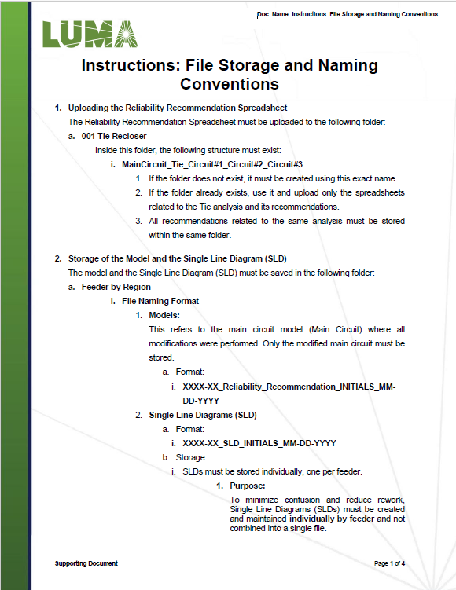
Instructions: File Storage and Naming Conventions
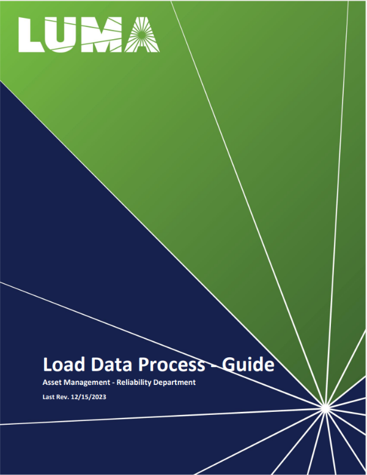
Load Data Process – Guide
Quarterly Logs – Guide (S&C)
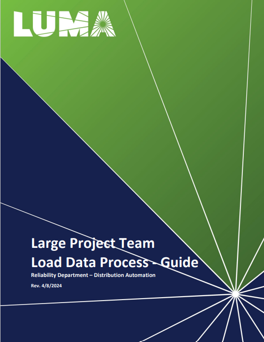
Load Data – Large Project Team (Library)
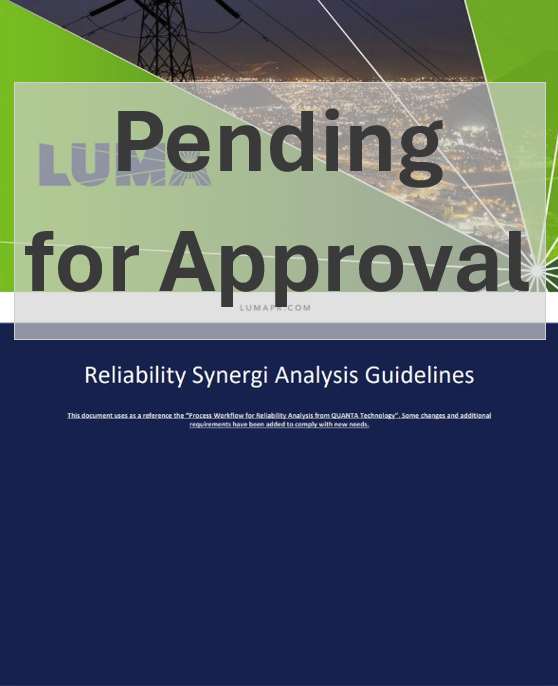
Reliability Recommendation Guidelines
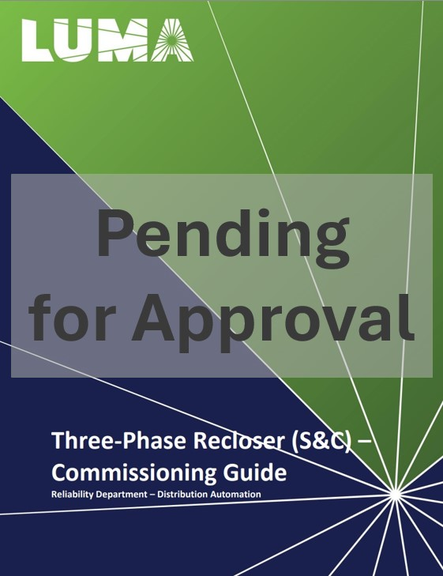
S&C Commissioning
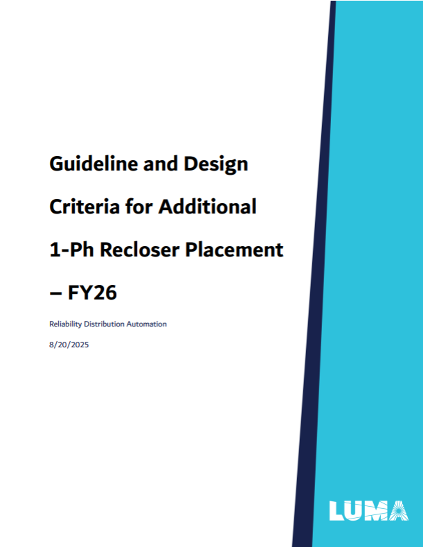
Design Criteria – 1Ph Recloser (FY26)
Load Data – Large Project Team (Direct)
Design Criteria – cFCI (FY26)
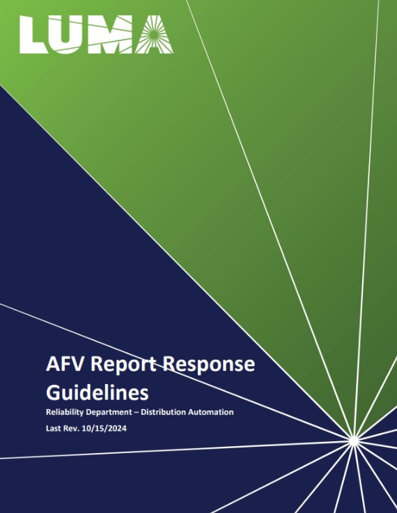
AFV Guideline (10/15/2024)
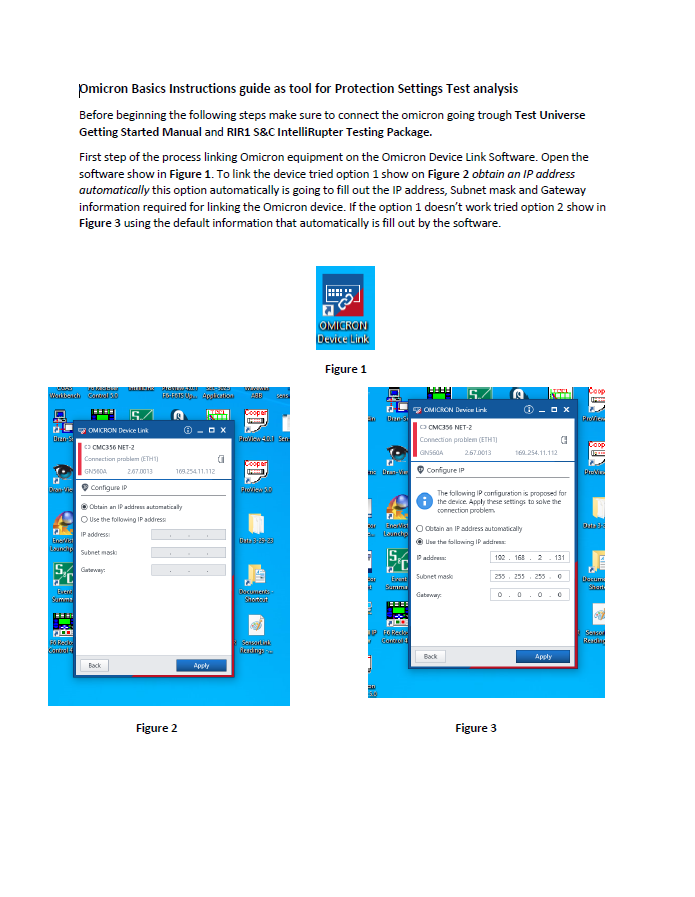
Omicron Basics Guide
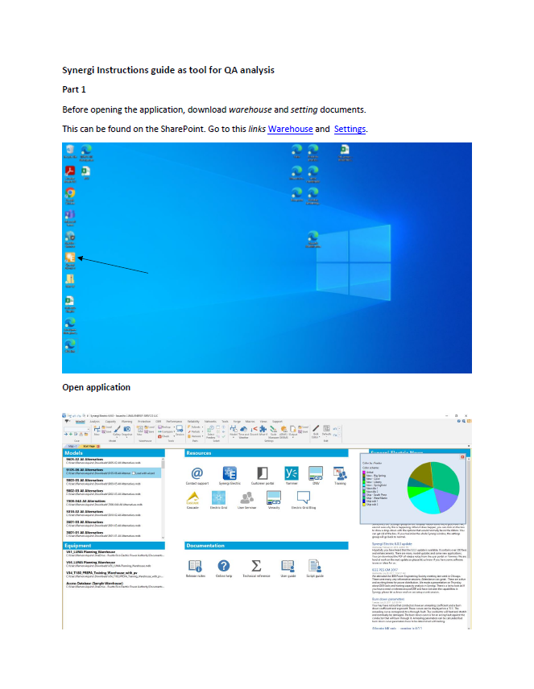
Synergi Instructions – QA Analysis Part 1
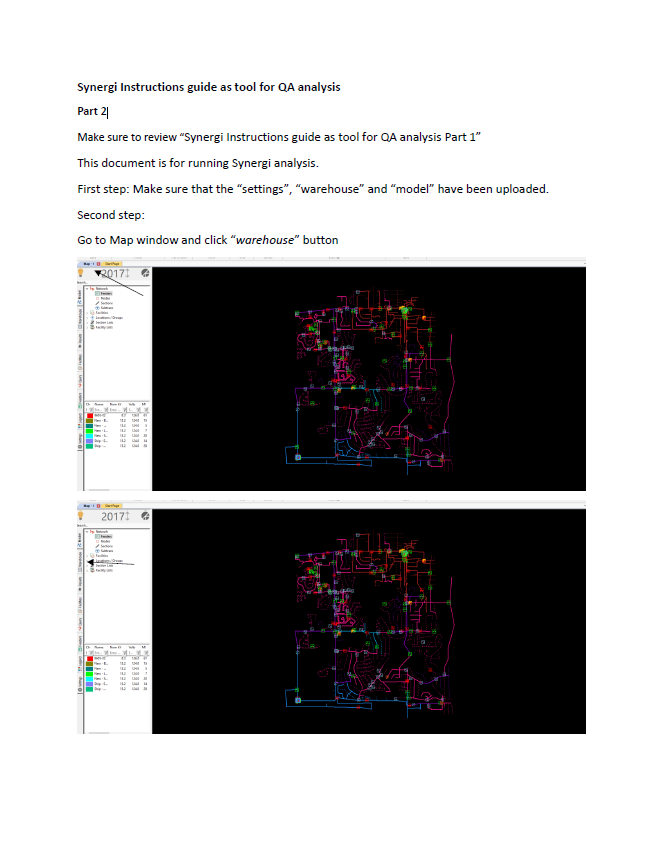
Synergi Instructions – QA Analysis Part 2
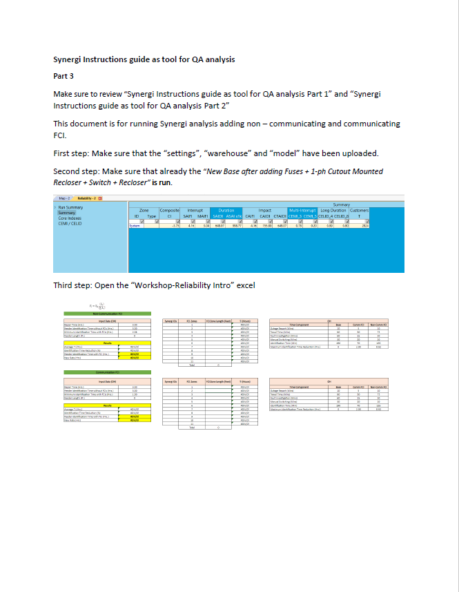
Synergi Instructions – QA Analysis Part 3
WOP Revision Process (Pending for Approval)
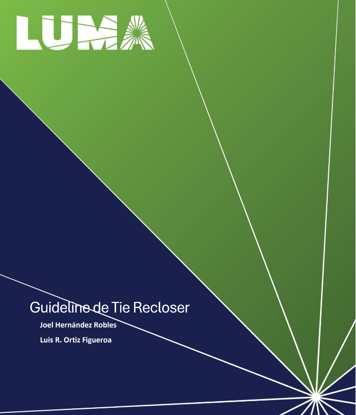
Tie Recloser Guideline FY26
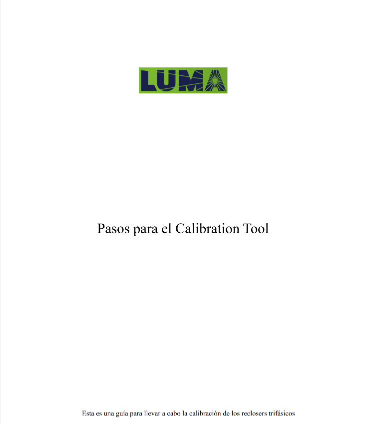
Pasos para el Calibration Tool